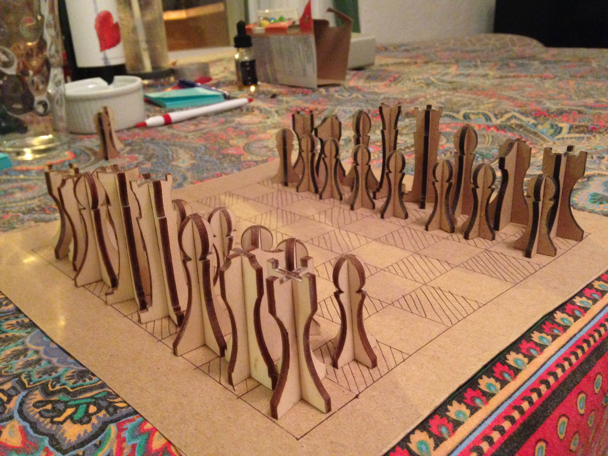
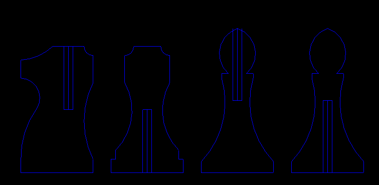

My roommates and I started playing a lot of chess at a cafe near our place but we didn't have a set to play with at home. I decided to laser cut a set. What's cool about this project is that it really doesn't take that much material and it's easy to make a whole bunch of them. If you have access to a laser cutter and want to make your own check my github for the vector drawings of the pieces. You'll probably have to change the files a bit to suit your needs, but if you can use a laser cutter this is easy!
I did all of the vector drawing in AutoCAD. I had a lot of fun trying to make the style of each piece consistent. Every piece is identical to its partner except for the knight. I think the knight is my favorite. Below you can see how the pieces fit together.
